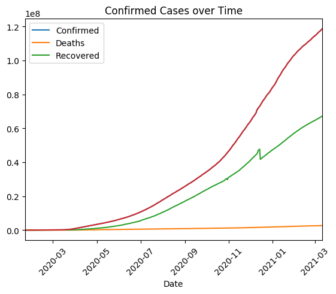
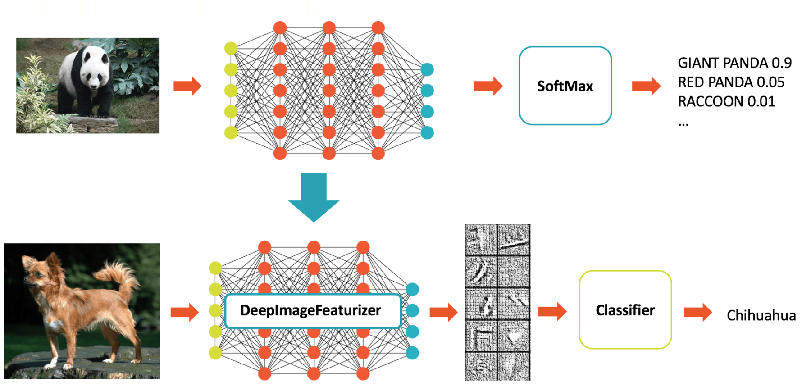

I am a George Washington University graduate student pursuing Master of Science in Data Analytics. My bachelor's degree is in Computer Science Engineering. My aim is to contribute towards bringing technology closer to every part of humanity and use it to make a positive impact on society. I want to obtain a position that challenges me and provides me with the opportunity to reach my full potential professionally. I have a deep interest in problem-solving and using technology to solve them as well as contributing to the global community.


The newly developed Heart Illness Prediction algorithm could detect heart disease early on and avert more damage. I used a variety of classifier techniques to train the model to make the prediction. The algorithms include Stochastic Gradient Descent, K-Nearest Neighbour, Extreme Gradient Boost, Decision Tree, and Random Forest. Random forest has been demonstrated to be the most precise and accurate.

The goal of this project is to create and deploy a system capable of detecting and alerting the driver's level of fatigue in real time. The system will analyse both the drivers face and eyes to measure the degree of fatigue and drowsiness. it is assumed that the signs of driver fatigue can be detected early enough to prevent a possible road accident, which could result in severe injuries or ultimately, in fatalities.

It was based on the analysis of real-time data supplied by the On-Board Diagnostics system in a vehicle. On the basis of the dataset, we collected several critical driving operation data, i.e., vehicle speed, engine speed (RPM), throttle position, and calculated engine load. All these parameters have a major effect on the driver identification and rating of the drivers. This result can be used by the insurance companies to assign a better premium to those drivers that have a better score.

It was a data analysis project that utilized the COVID-19 dataset, which contains information on the total number of confirmed cases every day in each country. By dropping and aggregating rows, the dataset was preprocessed for analysis. Furthermore, efforts to comprehend all aspects of the data, trends, and so forth. This is accomplished through the use of statistics and data visualization.
Choosing and determining an appropriate metric for the research. The results revealed a wide range of relationships and conclusions.

It was an attempt to describe the historical trends at the Olympics for trivia and further analysis. For this project, we used Apache Hadoop, Apache Hive, MySQL, Cloudera Manager to set up for running it on AWS.

Melanoma is one of the most deadly types of skin cancer, with over 75,000 cases diagnosed each year in the United States. It was an attempt to use deep learning to detect the presence of melanoma in the skin. A transfer learning method was used to train an image classifier. It makes use of feature vectors generated by Inception V3 with ImageNet training.
{kind=link}
{kind=link}